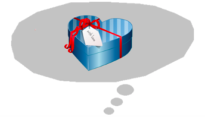

Creating a Discussion Guide with Recent Retirees in Mind
I am new to User Experience Design and sometimes get confused and wonder if I am completing activities in the right manner. I guess this is because UX is sort of like an art and a field that is still in its early days. Maybe only time can help each person decide on what works best for him/her.
For my Empathetic Research Framework class assignment I had to create questions for an interview for understanding the experiences, values, beliefs and behaviours of people who recently retired, as it relates to their health and wellness. At first I did not know what kind of questions to ask and how to get them to flow in a conversational manner and at the same time keep to the objectives of the interview. But after contemplating I thought of someone who had recently retired and what questions I could have asked her without making her uncomfortable. I did not realize I was using a persona. I learnt about persona creation before but had considered it as just school work. But upon reflection I was later able to make the connection between in-class personas to real life persons.
I love buying gifts for people I care about and I usually put a lot of thoughts into deciding what to buy. But how do I form those thoughts? It is because I know and understand those persons. I guess in UX personas help us build that gap so we can understand the persons we will be interviewing and put thoughts into what to ask them; hence, helping us to further understand them so maybe we can actually be able to improve their experience.
Anyway, I know your time is precious so let me get straight to the scenario and discussion guide of this assignment. I skipped the introduction part — self introduction, brief on interview protocol to signing of the consent form.
Scenario
Start
Health and Wellness
You’ve been hired by a health and wellness company to help them understand the experiences, values, beliefs, and behaviours of people who have recently retired, as it relates to their health and retirement. The company’s intention is to design an app that will support people in managing their stress and anxiety during this life change.
Goal
Create a discussion guide that could be used in a semi-structured interview.
Research Topics and Questions
Changes in Lifestyle due to Retirement
- What lifestyle changes do newly retired individuals experience?
- How do newly retired individuals react to these changes?
Health and Wellness
- How do people in the retirement community cope with stress?
- What strategies do individuals in the retirement community believe can help them to maintain a healthy lifestyle?
Use of Technology in the Retirement Community
- Why do people in the retirement community use technology?
- How do people in the retirement community physically interact with devices whilst using apps?
Discussion Guide:
Warm-up
- Can you walk me through a typical day in your life?
- Can you tell me about your hobbies?
- What time of the day do you feel most relaxed?
- Can you walk me through your experience during this time?
- an you tell me about your previous job?
Body
Topic 1 Change in Lifestyle due to Retirement
- Can you describe a typical weekday in your life before you retired?
- How has your routine changed after retirement?
- Can you share with me anything you miss about your life before you retired?
- How has your communication changed with your previous colleagues?
- What opportunities do you have now that you did not have before you retired?
- Do you now have more or less time at your own disposal? Can you tell me why?
- Can you compare the concerns you have now to those you had before you retired?
Topic 2 Health and Wellness
- Can you tell me about a recent experience when you felt stressed?
- How do you to deal with stress?
- In your opinion, what does maintaining a healthy lifestyle involve?
- Do you try to maintain a healthy lifestyle? If yes, can you tell me how? If no, can you tell me why?
- Tell me about three things in your life that makes you feel happy.
Topic 3 Use of Technology in the Retirement Community
- What are your favourite apps?
- For what purpose(s) do you use your favourite apps?
- What device you use most often to interact with your favourite apps?
- Why is that the device you use most often to interact with your favourite apps?
- Can you walk us through a good experience whilst using any of your favourite app?
- Can you walk us through a frustrating experience whilst using any of your favourite app?
- How is your experience using an app at home compared to using it whilst travelling?
- Is there a specific time of the day when you mostly enjoy using your favourite app? Why is that so?
Cool-down
- Use three words to describe your life. Why did you choose those words?
- Would you like to correct or clarify any of your response?
- Is there anything that you would like to talk about that I did not talk about?
Wrap-up
- Is there any question that you have for me?
Thank you for participating in this interview.
We value your opinion and will keep your information confidential.
End
Hope this might be helpful to at least someone out there.
Kind regards,
Shafeeza
A programmer who has recently started learning about UX.
Still putting pieces together!
Note: The cover picture was created from images taken from openclipart.org